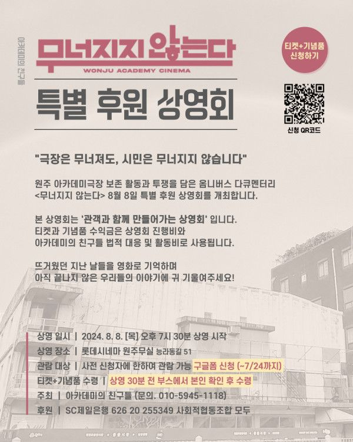

＜무너지지 않는다＞
후원 상영회 안내
아카데미극장의 철거… 그후
극장은 무너져도,
시민은 무너지지 않는다!
원주 아카데미극장 보존 활동과 투쟁을 담은
다큐멘터리 영화 <무너지지 않는다>
원주 특별 상영회를 개최합니다.
-
<무너지지 않는다> 원주 특별 상영회 신청안내
원주 아카데미극장 보존 활동과 투쟁을 담은
다큐멘터리 영화 <무너지지 않는다>
두번째 원주 특별 상영회를 개최합니다.
뜨거웠던 지난 날들을 영화로 기억하며
아직 끝나지 않은 우리들의 이야기에
귀 기울여주세요!
본 상영회는,
????관객과 함께 만들어가는 상영회???? 입니다.
티켓과 굿즈를 함께 구매하신 후
관람이 가능합니다.
티켓과 굿즈 수익금은 본 상영회의 대관료와
아카데미의 친구들 법적 대응 및
활동비로 사용됩니다 ✨️
많은 관심과 신청 바랍니다.
▪️일시 : 2024년 8월 8일(목) 19시 30분 (~7/24(수) 신청 마감)
▪️장소 : 롯데시네마 원주 무실
* 상영 종료 후 씨네토크(GV) 진행
< 안내 사항 >
- 매진 시 조기 마감될 수 있음
- 사전 신청자에 한하여 티켓 배부(9층 매표소)
- 상영 30분 전 본인 확인 후 티켓/굿즈 수령 가능
- 주차 3시간 무료(매점 옆 데스크에서 셀프 등록)
* 자세한 내용은 예매 신청폼을 확인해 주시기 바랍니다.